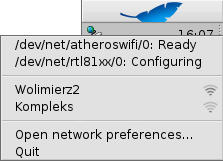

ネットワークの状態 (NetworkStatus)
ネットワークの状態 (NetworkStatus)
| Deskbar: | ||
| 場所: | /boot/system/apps/NetworkStatus | |
| 設定ファイル: | 無し |
ネットワークの状態 (NetworkStatus) はネットワークの接続状態を表示します。はじめて起動するときは、ウィンドウモードまたは Deskbar モードを選択してください。ウィンドウモードで、ウィンドウのサイズを変更して、レプリカントを使ってデスクトップにドラッグすることもできます。このソフトは、コンテキストメニューで操作されます。

最初のセクションはすべてのネットワークデバイス名とその状態を表示します。いずれかの項目をクリックすると、そのデバイスの IP アドレス、ブロードキャストアドレス、およびネットマスクを表示するウィンドウを表示します。
次は最初のワイヤレスアダプタが見つけたすべてのワイヤレスネットワーク名と信号強度です。より詳しい情報と接続方法は、ワークショップ: ワイヤレスネットワークを見てください。
最後に、 で、ネットワーク設定を変更、またはアプレットを できます。
状態アイコン
| レディー | リンクが確立しました。 | ||
| 設定中 | 接続が進行中。 | ||
| ステートフル設定無し | いくつかの設定がありません (ネットワーク設定をチェックしてください)。 | ||
| リンク無し | 物理接続がありません (たぶんケーブルが外れているか、ワイヤレスネットワークが無い)。 | ||
| - | ネットワークアダプターがありません (ドライバーが無い可能性もあります)。 |